Examples
The scripts in examples/ (an environment of their own: ThetaL by path, DotPlots to draw in the terminal) run a flow and draw it. Run one from the package root:
julia --project=examples examples/hele_shaw.jlEach section has an animation of the run and, beside it, a check of it.
Mean curvature flow
mean_curvature_flow.jl: a five-lobed star under $U = -\kappa$, with q -> -q^2 and Δt ∝ 1/max κ², run to 95 % of its extinction time $A_0/2\pi$. It turns convex, then round. This is evolve in one call.
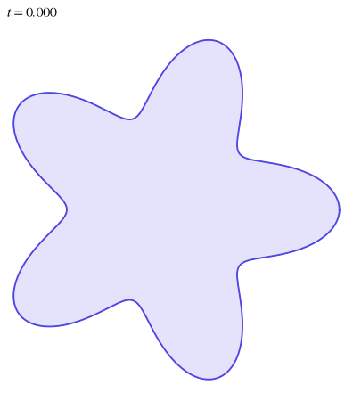
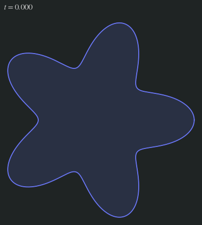
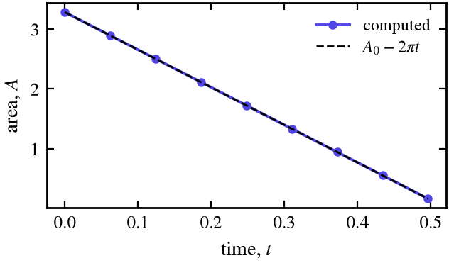
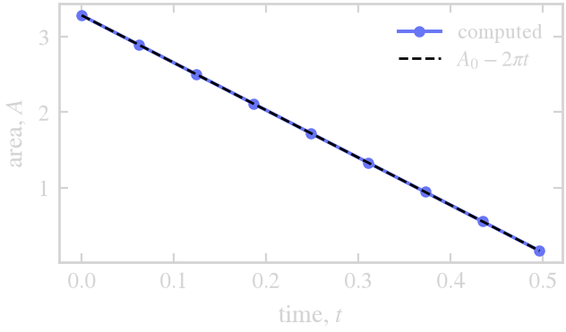
Curve shortening removes area at the rate $2\pi$ ($\int\kappa\,ds = 2\pi$): the star's area against $A_0 - 2\pi t$.
Wind-up in a vortex
vortex_windup.jl: a disk off the center of a Lamb–Oseen vortex, wound into a spiral (each point turns at $\omega(r)$). There is no symbol, because the motion is not stiff. The rigid part of the motion (the mean rotation and the drift of the disk) is integrated exactly, and the shear explicitly. N doubles as the filament lengthens and sharpens, from 64 points to 8192.
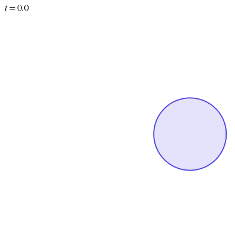
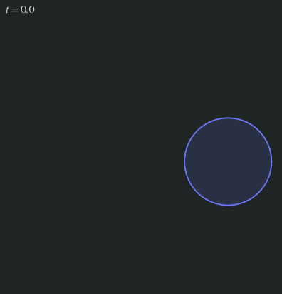
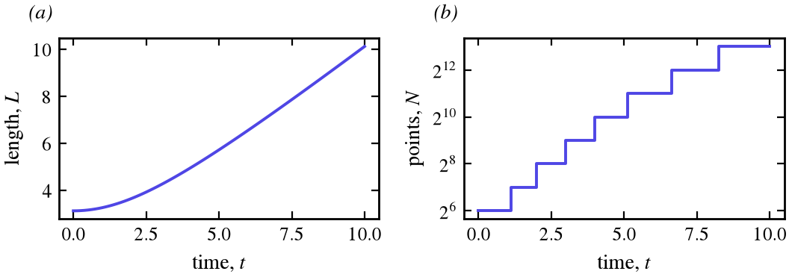
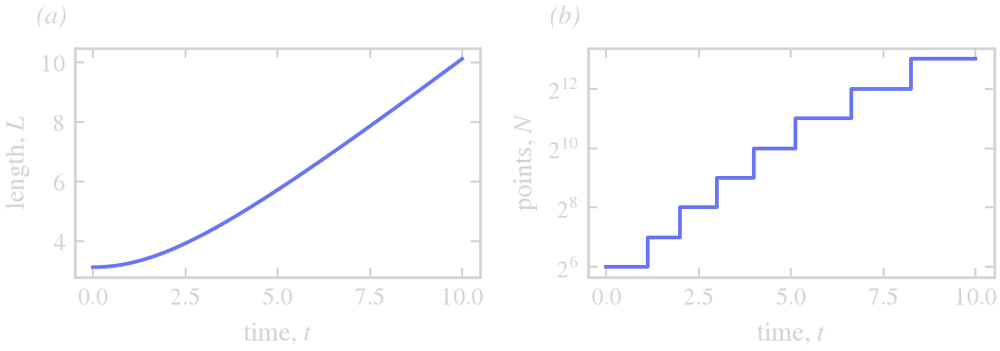
(a) The curve lengthens without bound as the shear winds it up. (b) N doubles whenever the spectral tail of $\varphi$ exceeds tol, seven times in all.
Hele-Shaw
hele_shaw.jl: air is injected at the rate $J = 2\pi$ into a bubble in a Hele-Shaw cell. The viscous fluid outside moves by Darcy's law $u = -\nabla p$, with $p$ harmonic outside the bubble, $p \sim -(J/2\pi)\log r$ far away, $p = -S\kappa$ on the interface (surface tension $S = 0.005$), and $U = -\partial p/\partial n$. ThetaL is not told any of this. The velocity solves the exterior Dirichlet problem itself, with a Cauchy integral whose density comes from a dense $N \times N$ solve, using the trapezoidal rule on ThetaL's equal-arclength grid (spectrally accurate once the singularity is subtracted). On a circle of radius $R$ a mode $k$ grows at $\sigma = (k-1)J/2\pi R^2 - S k(k^2-1)/R^3$. The small scales are damped at $\sigma \approx -S q^3$, which is the symbol (HLS 1994 scale Darcy's law by $1/2$, hence their $-S q^3/2$). The bubble grows faster than surface tension can keep it round, so it splits into fingers whose tips split again (Saffman–Taylor). Because the stiff part is integrated exactly, the step only has to follow the grid spacing, $\Delta t = \tfrac12 L/N$. N doubles from 256 to 1024 as the fingers sharpen, and the run takes a few seconds.
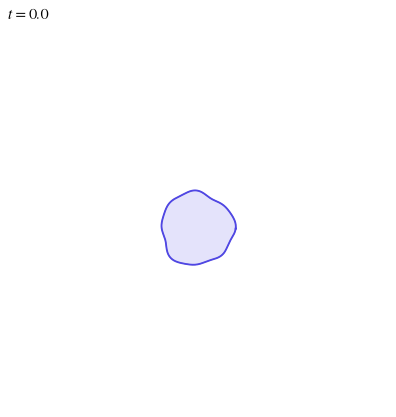
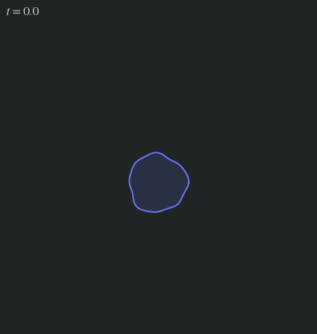
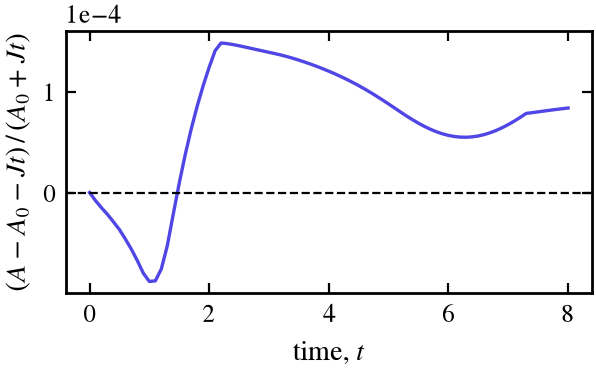
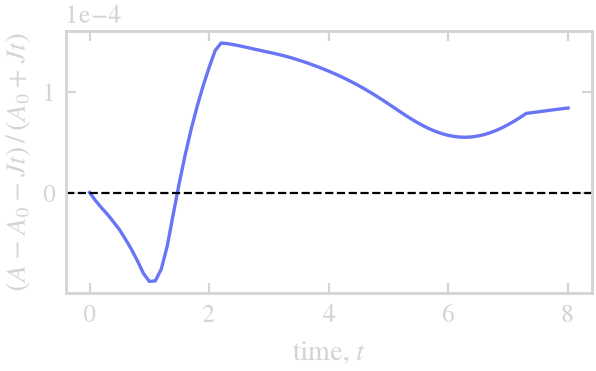
The bubble gains area at the injection rate $J$, which nothing in the velocity imposes: the relative error in $A = A_0 + Jt$ stays near $10^{-4}$.
Hele-Shaw with several bubbles
hele_shaw_bubbles.jl: three bubbles of different sizes in one cell, each injected at $J = 2\pi$ ($S = 0.01$). They share the fluid around them. The fluid between two bubbles is pushed out by both, so its pressure stays high, and the facing sides flatten into parallel walls and hold back while the fingers grow outward into open fluid. The bubbles screen each other and never come closer than about 1.5.
- One velocity for all the curves.
U(Xs, t)returns one vector per curve. A single dense solve couples every interface: the Cauchy integral runs over all of them, and each bubble adds one unknown, its pressure $P_k$, with the condition that pins the constant the integral cannot see on that curve. - Where the source sits. Each bubble's injection is a logarithm centered at any point inside it. The centroid will not do, because pushed by their neighbors the bubbles turn lopsided, and a fjord can grow onto the centroid. The source is the deepest of a few candidate points instead.
- The step from the velocity. The finger tips move at $|U|$ up to about 3. The
callbackreads the largest $|U|$ frominteg.Uafter each step, anddtgives $\Delta t = \tfrac14\,(L/N)/\max|U|$. - Close approach. The same callback stops the run if two interfaces come within 0.05 (
min_distance). Below that the coupling between them is stiff in a way no symbol expresses (see Limits), and the bubbles would soon merge, which ThetaL does not do.
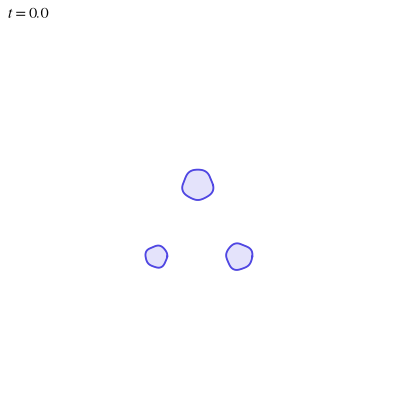
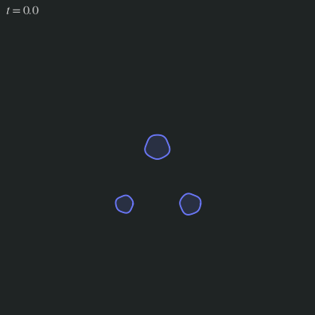
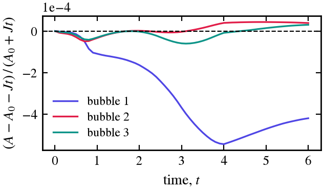
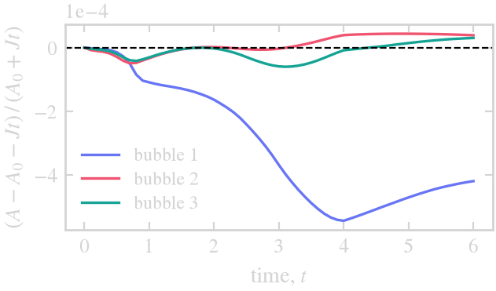
Each bubble gains area at its own rate $J$, a check on the velocity and on the pressures $P_k$: the relative error stays below $6 \times 10^{-4}$. Bubble 1, the largest, has the largest error, from time stepping (it falls as $\Delta t$ does).
Vesicles
vesicles.jl: closed membranes that resist bending (Helfrich), with the area $A$ they enclose and their length $L$ both fixed. Each relaxes by Willmore flow, the gradient flow of the bending energy $E = \tfrac12\oint\kappa^2\,ds$, to the shape set by its reduced area $\nu = 4\pi A/L^2$: ellipse-like near $\nu = 1$, then biconcave, the two-dimensional red blood cell, with deeper dimples as $\nu$ falls.
- The velocity. With $\kappa_t = -U_{ss} - \kappa^2 U$, $dE/dt = -\oint(\kappa_{ss} + \tfrac12\kappa^3)U\,ds$, so $U = \kappa_{ss} + \tfrac12\kappa^3 + p - \sigma\kappa$, with a pressure $p$ and a tension $\sigma$ from a 2 × 2 solve per curve at each evaluation. The stiff part is $\kappa_{ss}$:
q -> -q^4. - Holding A and L. Setting $dA/dt = \oint U\,ds$ and $dL/dt = \oint\kappa U\,ds$ to zero still lets $A$ and $L$ drift by the error of the step, most in the first steps (the initial layer of Limits). Setting them to $(A_0 - A)/\tau$ and $(L_0 - L)/\tau$ instead holds $\nu$ to roundoff once the shapes settle.
- The step. $\Delta t \propto 1/\max\kappa^4$ while the tips of the starting ellipses relax, then $10^{-3}$. Larger first steps leave an error that breaks the symmetry of the start.
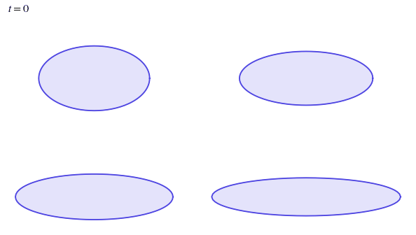
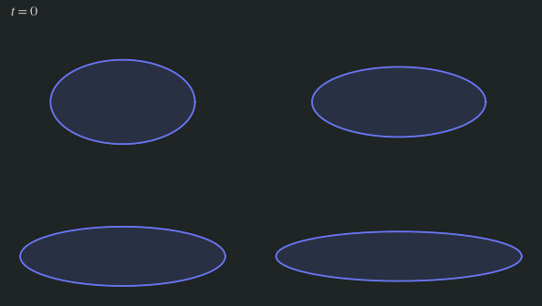
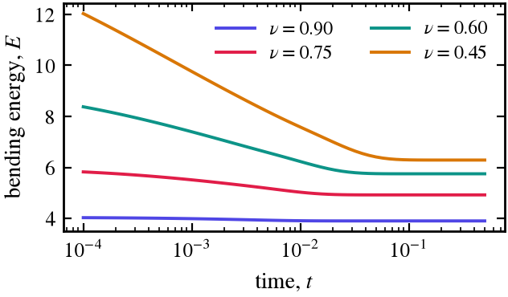
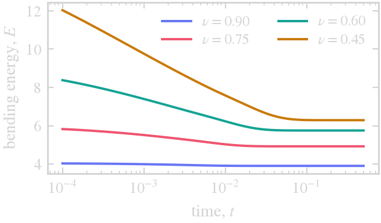
The bending energy falls monotonically to its equilibrium value, lower the rounder the vesicle. The frames of the animation are spaced logarithmically in time, from $10^{-4}$ to 0.5: almost all the change is over by $t = 0.03$.
More scripts
examples/ also has surface_diffusion.jl ($U = \kappa_{ss}$, q -> -q^4), step_control.jl (the step from the embedded error estimate, see Limits), anisotropy.jl (a symbol that depends on the curve, see Symbols, filter and resolution), rigid_rotation.jl (a star turning about an outside point, its shape kept exactly) and coarsening.jl (twelve particles under a mean field, driven with init and advance!, removed as they vanish).